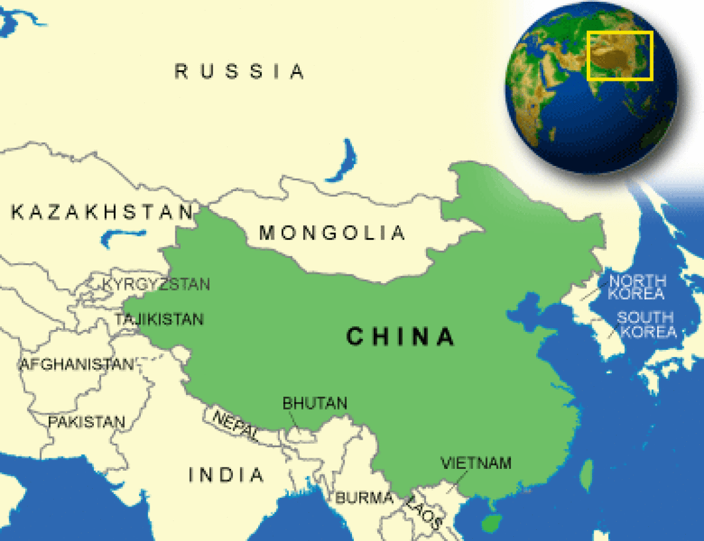

The Wayback Machine - https://web.archive.org/web/20231212182747/https://www.countryreports.org/country/china.htm

Where is China located?
What countries border China?

China Weather
What is the current weather in China?
China Facts and Culture
What is China famous for?
- Cultural Attributes: Confucianism has a great influence on how the Chinese approach daily life. The elderly in China are respected. The Chinese... More
- Family: Historically loyalty to the family unit has always been important to the Chinese. During the Cultural Revolution, the state tried... More
- Personal Apperance: The Chinese generally wear conservative clothing. In the past, the Chinese people mostly wore the same style of pantsuit because... More
- Recreation: Table tennis, basketball, and soccer are the most popular sports in China. In warm weather, the Chinese like to relax... More
- Diet: Generally, there is not a wide variety of food available throughout the country, except where private enterprise is encouraged. What... More
- Food and Recipes: Chopsticks are used for all meals in China. When finished, a person places the chopsticks neatly on the table; they... More
- Visiting: Invitations are usually sent for formal occasions, but otherwise, it is common to visit someone unannounced. When invited, one is... More
- Dating: Chinese customs stress moral purity. Intimate relations and public displays of affection are discouraged. To help the family planning program... More
China Facts
What is the capital of China?
| Capital | Beijing |
| Government Type | Communist party-led state |
| Currency | Renminbi yuan (RMB) |
| Total Area |
3,705,387 Square Miles 9,596,961 Square Kilometers |
| Location | Eastern Asia, bordering the East China Sea, Korea Bay, Yellow Sea, and South China Sea, between North Korea and Vietnam |
| Language |
Standard Chinese or Mandarin (Putonghua, based on the Beijing dialect), Yue (Cantonese), Wu (Shanghainese), Minbei (Fuzhou), Minnan (Hokkien-Taiwanese), Xiang, Gan, Hakka dialects, minority languages Note: Mongolian is official in Nei Mongol, Uighur is official in Xinjiang Uygur, and Tibetan is official in Xizang (Tibet) |
| GDP - real growth rate | 6.6% |
| GDP - per capita (PPP) | $15,400.00 (USD) |
China Demographics
What is the population of China?
| Ethnic Groups | Han Chinese 91.5%, Zhuang, Manchu, Hui, Miao, Uighur, Tujia, Yi, Mongol, Tibetan, Buyi, Dong, Yao, Korean, and other nationalities 8.5% |
| Languages | Standard Chinese (putonghua), based on the Mandarin dialect, is the national language and is spoken by more than 70 percent of the population. Other dialects are also spoken, including Wu (in Shanghai), Min, Yue (Cantonese), and Kejja. Each of the 55 minorities speaks its own language or dialect. In some cases, education and all official transactions may be conducted in the local minority language. Chinese does not have a phonetic alphabet; it uses characters to express words, thoughts, or principles. A Romanized alphabet Pinyin is used to help teach Chinese in school and for international communication. Even though there are over 50,000 characters in the Chinese alphabet, only about 8,000 are actually in use. The Chinese language requires that one knows 1,500 to 2,000 characters to be considered fluent in the language. |
| Nationality Adjective | Chinese |
| Nationality Noun | Chinese (singular and plural) |
| Population | 1,394,015,977 |
| Population Growth Rate | 0.46% |
| Population in Major Urban Areas | Shanghai 20.208 million; BEIJING (capital) 15.594 million; Guangzhou 10.849 million; Shenzhen 10.63 million; Chongqing 9.977 million; Wuhan 9.158 million |
| Predominant Language |
Standard Chinese or Mandarin (Putonghua, based on the Beijing dialect), Yue (Cantonese), Wu (Shanghainese), Minbei (Fuzhou), Minnan (Hokkien-Taiwanese), Xiang, Gan, Hakka dialects, minority languages Note: Mongolian is official in Nei Mongol, Uighur is official in Xinjiang Uygur, and Tibetan is official in Xizang (Tibet) |
| Urban Population | 50.6% |
China Government
What type of government does China have?
- Executive Branch: Chief of State: President XI Jinping (since 14 March 2013); Vice President WANG Qishan (since 17 March 2018) Head of Government:... More
- Suffrage: 18 years of age; universal More
- Citizenship: Citizenship by Birth: no Citizenship by Descent Only: at least one parent must be a citizen of China Dual Citizenship Recognized: no Residency... More
- National Holiday: National Day (anniversary of the founding of the People's Republic of China), 1 October More
- Constitution: History: several previous; latest promulgated 4 December 1982 Amendments: proposed by the Standing Committee of the National People’s Congress or supported... More
- Independence: 1 October 1949 (People's Republic of China established); notable earlier dates: 221 B.C. (unification under the Qin Dynasty); 1 January... More
China Video
YouTube: China Explore China & Chinese Culture -- A Glimpse of Chinese Culture
China Geography
What environmental issues does China have?
- Overview: Occupying an area of about 3.7 million square miles, the People's Republic of China (PRC) is the fourth-largest country in... More
- Climate: The country lies almost entirely in the temperate zone. Only Hainan Province and the southernmost portions of Yunnan and Guangdong... More
- Border Countries: Afghanistan 76 km, Bhutan 470 km, Burma 2,185 km, India 3,380 km, Kazakhstan 1,533 km, North Korea 1,416 km, Kyrgyzstan... More
- Environment - Current Issues: Air pollution (greenhouse gases, sulfur dioxide particulates) from reliance on coal produces acid rain; water shortages, particularly in the north;... More
- Environment - International Agreements: Party To: Antarctic-Environmental Protocol, Antarctic Treaty, Biodiversity, Climate Change, Climate Change-Kyoto Protocol, Desertification, Endangered Species, Environmental Modification, Hazardous Wastes, Law... More
- Terrain: Mostly mountains, high plateaus, and deserts in the west; plains, deltas, and hills in east More
China Economy
How big is the China economy?
- Economic Overview: Since the late 1970s, China has moved from a closed, centrally planned system to a more market-oriented one that plays... More
- Industries: World leader in gross value of industrial output; mining and ore processing, iron, steel, aluminum, and other metals, coal; machine... More
- Currency Name and Code: Renminbi yuan (RMB) More
- Export Partners: United States 18%, Hong Kong 14.6%, Japan 6%, South Korea 4.5% More
- Import Partners: South Korea 10.9%, United States 9%, Japan 8.9%, Germany 5.5%, Australia 4.1% More
China News and Current Events
What current events are happening in China?
Source: Google News
China Travel Information
What makes China a unique country to travel to?
Country Description
The People's Republic of China was established on October 1, 1949, with Beijing as its capital city. With well over 1.3 billion citizens, China is the world's most populous country and the fourth-largest in terms of territory. Although political power remains centralized in the Chinese Communist Party, China is undergoing profound economic and social changes. Modern tourist facilities are available in major cities, but many facilities in smaller provincial cities and rural areas may be below international standards.
Crime
When visiting China, you should always take routine safety precautions and pay attention to your surroundings. Petty theft remains the most prevalent type of crime encountered. Pickpockets target tourists at sightseeing destinations, airports, crowded subways, markets, and stores. Make sure you guard your passport and wallet, as most incidents tend to involve items kept in back pockets, backpacks, or bags/purses swung over a shoulder or set down in a taxi, another vehicle, a restaurant, or a shop.Narcotics-related crimes and use are also on the rise in China. Chinese law enforcement authorities have little tolerance for illegal drugs, and they periodically conduct widespread sweeps of bar and nightclub districts, targeting narcotics distributors and drug users. Expatriates from various countries have been detained in such police actions.
Con artists targeting visitors are also common in popular tourist sites. A common scam involves younger Chinese "English students," often women or a couple, offering a local tour and an invitation to tea at a nearby restaurant. When the bill comes, the restaurant owners force victims to pay an exorbitant bill before they can leave the premises.
Taxi drivers, especially at airports, sometimes target arriving travelers, refusing to use the meter or claiming they are a limousine and can charge higher fares. Always have the name of your destination written in Chinese to show the driver, and get a receipt when you arrive at your destination. It is a good practice to keep valuables such as purses, camera bags, and computer cases next to you or in your lap rather than in a less-accessible area of the taxi. Ask the driver to remove the bags from the trunk before you get out of the taxi and before you pay, so he cannot drive away with your luggage.
Do not buy counterfeit or pirated goods, even if they are widely available. Not only are the bootlegs illegal in the United States, but if you purchase them, you may also be breaking local law. Some U.S. citizens report that items purchased, even at state-owned or museum stores, believed to be antiques or genuine gems are later determined to be reproductions.
Counterfeit currency is a significant concern in China. Cab drivers and businesses have given many people, not just tourists, counterfeit currency. Carrying small bills or using exact change, particularly in taxis, can help protect you. Some merchants will switch a large bill with a counterfeit bill and return it to you, claiming that you passed them the counterfeit bill. If you must pay with RMB 100 bills, it may be useful to note the last few serial numbers before paying in case they get switched. There have been cases of people receiving counterfeit bills from free-standing ATMs. Use only ATMs at financial institutions or those recommended by your hotel.
Political protest is not legal or permitted in China and is rarely encountered by foreigners. Travelers who have attempted to engage in political protest activities in public places have been deported quickly, in some cases at their own expense, usually before the U.S. Embassy is aware of the situation.
Participating in unauthorized political activities or protests against Chinese policy in China may result in lengthy detentions and may impact your eligibility for future visas to visit China. Foreigners engaging in pro-Falun Gong or pro-Tibetan activities have been detained or immediately deported from China, usually at their own expense, after being questioned. Several reported they were subject to interrogations and were physically abused during detention. In addition, some alleged that personal property, including clothing, cameras, and computers, was not returned.
U.S. citizens have been detained and expelled for distributing religious literature. Chinese customs authorities have enforced strict regulations concerning the importation of religious literature, including Bibles. If you bring religious literature with you, it should be a "reasonable amount" for your personal use only. If you attempt to bring larger quantities, the literature will likely be confiscated and you may be fined, detained, or deported.
Criminal Penalties
While you are traveling in China, you are subject to its laws even if you are a U.S. citizen. Foreign laws and legal systems can be vastly different than our own. There are also some things that might be legal in the country you visit, but still illegal in the United States. For example, you can be prosecuted under U.S. law if you buy pirated goods. Engaging in sexual conduct with children or using or disseminating child pornography in a foreign country is a crime prosecutable in the United States. If you break local laws in China, your U.S. passport will not help you avoid arrest or prosecution. It is very important to know what is legal and what is not wherever you go.China gives the police the authority to detain and deport foreigners for a wide variety of reasons, including engaging in prohibited religious activities and soliciting prostitutes. If you do not have your passport with you, you may be taken in for questioning. China has strict laws against driving under the influence of alcohol that can lead to immediate detention on a criminal charge.
If you are arrested in China, the U.S.-China Consular Convention requires Chinese authorities to notify the U.S. Embassy or nearest consulate general of your arrest within four days. Typically, the police will not allow anyone other than a consular officer to visit you during your initial detention period, including your family or even an attorney. Bail is rarely granted in China, and you can be subject to detention for many months before being granted a trial. Please see the section on DUAL NATIONALITY for the limits on consular notification and access in the cases of persons who hold dual nationality.
Languages
Standard Chinese (putonghua), based on the Mandarin dialect, is the national language and is spoken by more than 70 percent of the population. Other dialects are also spoken, including Wu (in Shanghai), Min, Yue (Cantonese), and Kejja. Each of the 55 minorities speaks its own language or dialect. In some cases, education and all official transactions may be conducted in the local minority language. Chinese does not have a phonetic alphabet; it uses characters to express words, thoughts, or principles. A Romanized alphabet Pinyin is used to help teach Chinese in school and for international communication. Even though there are over 50,000 characters in the Chinese alphabet, only about 8,000 are actually in use. The Chinese language requires that one knows 1,500 to 2,000 characters to be considered fluent in the language.
Medical Facilities and Health Information
The standards of medical care in China are not equivalent to those in the United States. If you plan to travel outside of major Chinese cities, you should consider making special preparations.Travelers have reported difficulty passing through customs inspection when arriving with large quantities of prescription medications. If you regularly take over-the-counter or prescription medication, bring your own supply in the original container, including each drug's generic name, and carry the doctor's prescription with you. Many commonly-used U.S. drugs and medications are not available in China, and some that bear names that are the same as or similar to prescription medications from the United States may not contain the same ingredients or may be counterfeit. If you try to have medications sent to you from outside China, you may have problems getting them released by Chinese Customs, and/or you may have to pay high customs duties.
Reuse of medical supplies such as syringes and needles or poor sterilization practices are problems in China, contributing to the transmission of diseases such as hepatitis, which is endemic in China. To avoid contamination, travelers should always ask doctors and dentists to use sterilized equipment and be prepared to pay for new syringe needles in hospitals or clinics.
In emergencies, Chinese ambulances are often slow to arrive, and most do not have sophisticated medical equipment or trained responders. In most parts of China, helicopter evacuations are not commercially available. Many travelers choose to take taxis or other vehicles to the nearest major hospital rather than wait for ambulances to arrive. Most hospitals demand cash payment or a deposit in advance for admission, procedures, or emergencies, although a few hospitals in major cities may accept credit cards.
Beijing, Shanghai, Guangzhou, and a few other large cities have medical facilities with some international staff. Many hospitals in major Chinese cities have so-called VIP wards (gaogan bingfang). Most VIP wards provide medical services to foreigners and have some English-speaking staff. However, even in the VIP/foreigner wards of major hospitals, you may have difficulty due to cultural, language, and regulatory differences. In China, it is customary for patients' families to help care for them in the hospital and to supply their toiletries, paper supplies, and meals. Hospitals often refuse to perform surgery or administer treatment without the written consent of the patient's family, even if they are not in China, and doctors frequently will only tell the family members the patient's diagnosis and prognosis, but will not discuss it with the patient. Physicians and hospitals sometimes refuse to give U.S. patients copies of their Chinese hospital medical records, including laboratory test results, scans, and x-rays.
Mental health facilities or medications are not widely available in China. If you are traveling to or studying abroad in China, before you go, put a plan in place for managing your mental health.
In most rural areas, only rudimentary medical facilities are available, often with poorly trained personnel who have little medical equipment and medications. Rural clinics are often reluctant to accept responsibility for treating foreigners, even in emergency situations.
If you elect to have surgery or other medical services performed in China, be aware that there is little legal recourse to protect you in case of medical malpractice. The U.S. Embassy and consulates general in China maintain lists of local English-speaking doctors and hospitals, which are published on their respective American Citizens Services web pages.
Most roads and towns in Tibet, Qinghai, parts of Xinjiang, and western Sichuan are situated at altitudes over 10,000 feet. If you plan to travel in these areas, you should seek medical advice in advance of travel, allow time for acclimatization to the high altitude, and remain alert to signs of altitude sickness. Air pollution is also a significant problem throughout China, and you should consult your doctor prior to travel and consider the impact seasonal smog and heavy particulate pollution may have on you. You can find detailed information on vaccinations and other health precautions on the CDC website. Please note that the CDC recommends that travelers to China ensure that their polio vaccinations are up to date. For information about outbreaks of infectious diseases abroad, consult the World Health Organization (WHO) website.
Tuberculosis is also an increasingly serious health concern in China. For further information, please consult the CDC's information on TB.
HIV is a significant concern in China. An estimated quarter of a million people in China are living with HIV, most of whom are not aware of their status.
ASSISTED REPRODUCTIVE TECHNOLOGY: In vitro fertilization (IVF) is widely practiced in China and a number of government-licensed clinics perform the procedure. Surrogacy, however, is strictly forbidden under Chinese law, and surrogacy contracts will not be considered valid in China. The use of reproductive technology for medical research and profit is strictly controlled in China. In February 2013, the Chinese Ministry of Health launched a crackdown against unlicensed fertility clinics and underground fertility treatment programs.
Safety and Security
For most visitors, China remains a very safe country. Petty street crime is the most common safety concern for U.S. citizens in China. However, business disputes between U.S. citizens and Chinese business partners can result in a physical confrontation or kidnapping. If you feel that your personal safety is in danger in the course of a business dispute, you should contact the local police immediately. The Chinese authorities are responsible for the safety and security of all residents and travelers to China and it is important to report your concerns to the local police.Some parts of the country are restricted or you may need a special permit to travel there. Please keep in mind that you are a guest in a foreign country where U.S. laws do not apply. You are subject to Chinese law and legal procedures.
Violent crime is not common in China, but violent demonstrations can erupt without warning, and in past years there have been some fatal bombings and explosions which could pose a random threat to foreign visitors in the area. The vast majority of these local incidents are related to disputes over land seizures, social issues, employment disputes, environmental problems, or conflicts involving ethnic minorities. Some incidents have become large-scale and involved criminal activity, including hostage-taking and vandalism.
Traffic Safety and Road Conditions
While in China, you will encounter road conditions that differ significantly from those in the United States. Rules, regulations, and conditions vary greatly throughout China, but a general rule of thumb is that traffic safety is poor, and driving in China can be dangerous.Traffic is chaotic and largely unregulated, and right-of-way and other courtesies are usually ignored. The average Chinese driver has fewer than five years of experience behind the wheel and the rate of traffic accidents in China, including fatal accidents, is among the highest in the world. Cars, bicycles, motorbikes, trucks, and buses often treat road signs and signals as advisory rather than mandatory. Pedestrians never have the right of way, and you should always be careful while traveling in, or even walking near, traffic. Child safety seats are not widely available in China, and most taxis and other cars do not have seat belts in the back seats. Motorcycle and bicycle accidents are frequent and often serious. If you decide to ride a bike or motorcycle, wear a helmet.
You may not drive in China using your U.S. driver's license or an international license. If you have a resident permit, you can apply for a PRC driver's license, although regulations for obtaining a license vary from province to province. Liability issues and the difficulty of passing the driver's test may make it preferable to employ a local driver.
If you are involved in a traffic accident, stay calm; road altercations sometimes turn violent quickly. The safest course is to call the police and wait for them. Even minor traffic accidents can become major public dramas. In some instances, bystanders have surrounded accident scenes and nominated themselves to be an ad hoc jury. The parties involved in an accident may offer money to the crowd in exchange for favorable consideration. If there are no injuries and damage is minimal, the parties often come to an agreement on the spot. If no agreement is reached and the police are called, the police may mediate or conduct an on-site investigation requiring those involved to come to the police station to sign statements. Unresolved disputes are handled by the courts. In cases where there are injuries, the driver whose vehicle is determined to have inflicted the injury will often be held at least partially liable for the injured person's medical costs regardless of actual responsibility for the accident. Many foreigners have been involved in incidents where the victims appear to have purposely caused accidents and claimed to have been injured in order to get payment for their supposed damages and medical care. When foreigners are involved in an accident, the police will sometimes hold their passports until the other parties are satisfied with the compensation they receive.